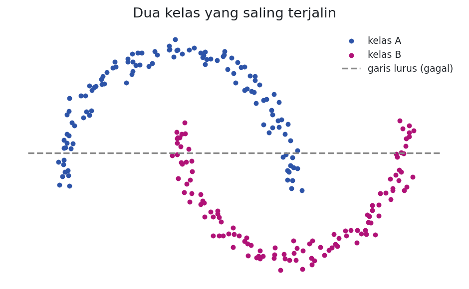
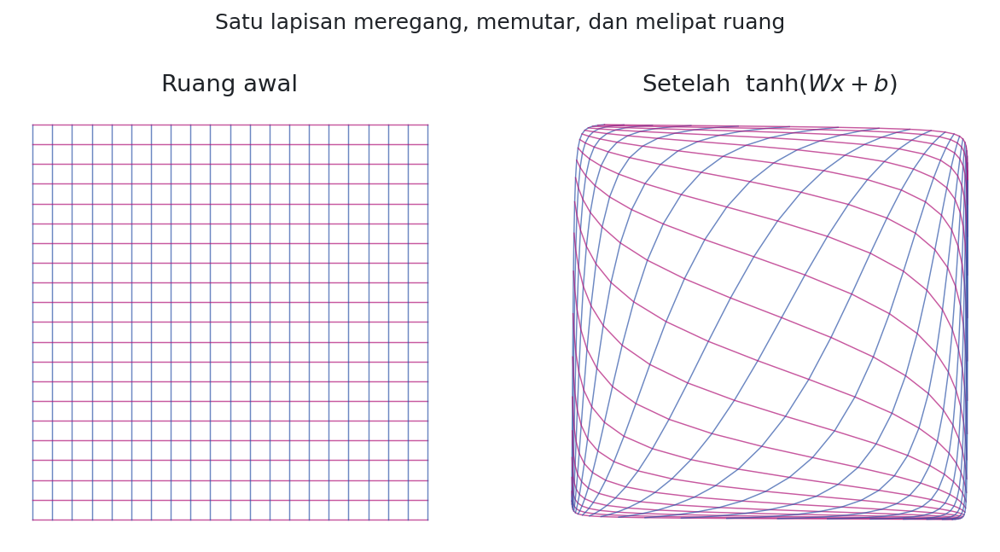
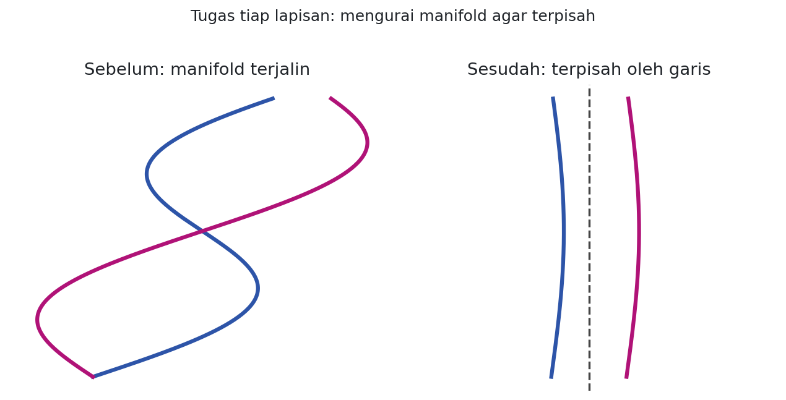
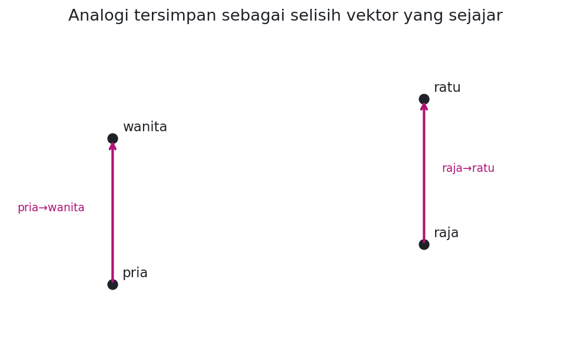

01Pertanyaan yang Sebenarnya
Beberapa tahun terakhir, jaringan saraf dalam (deep neural network) mendominasi pengenalan pola. Hasilnya memukau pada penglihatan komputer, pengenalan suara, dan pemrosesan bahasa. Namun di balik semua hasil itu tersimpan satu pertanyaan yang lebih menarik daripada sekadar angka akurasi: mengapa mereka bekerja sebaik itu?
Ada jawaban yang menurut saya sangat elegan. Jaringan saraf bekerja karena ia belajar representasi yang baik, yaitu cara menata ulang data sehingga pola yang semula rumit menjadi sederhana. Sepanjang tulisan ini kita akan melihat gagasan tunggal itu dari dua arah: secara geometris lewat bentuk ruang yang dilipat tiap lapisan, dan secara semantik lewat ruang makna kata. Keduanya adalah sisi yang sama dari satu mata uang.
02Universalitas dan Jebakannya
Sering dikutip bahwa jaringan saraf dengan satu lapisan tersembunyi bersifat universal: dengan cukup banyak unit tersembunyi, ia bisa menghampiri fungsi apa pun. Pernyataan ini benar, tetapi juga sering disalahpahami.
Mengapa benar? Bayangkan jaringan perceptron sederhana yang menerima masukan biner. Banyaknya kemungkinan masukan berhingga. Untuk tiap kemungkinan masukan, kita bisa merancang satu neuron tersembunyi yang aktif hanya untuk masukan spesifik itu, lalu memakai sambungan ke neuron keluaran untuk menentukan jawaban pada kasus tersebut. Pada dasarnya, lapisan tersembunyi berperan sebagai tabel pencarian (lookup table).
Babak 1 · Geometri
03Geometri Tiap Lapisan
Mari mulai dari kasus yang bisa digambar, yaitu data dua dimensi dengan dua kelas. Tugas klasifikasi sama dengan mencari batas yang memisahkan kedua kelas. Persoalan muncul saat kedua kelas saling terjalin sehingga tidak ada garis lurus yang bisa memisahkannya.

Apa yang dikerjakan satu lapisan jaringan saraf? Sebuah lapisan penuh (fully connected) dengan aktivasi \(\tanh\) melakukan transformasi:
- \(x\)
- Vektor masukan, yaitu satu titik data pada ruangnya.
- \(W x\)
- Perkalian matriks. Secara geometris ini memutar, menskala, dan menggeser-miringkan (shear) seluruh ruang.
- \(+\,b\)
- Menambah vektor bias, yaitu menggeser (translasi) ruang.
- \(\tanh(\cdot)\)
- Fungsi penyaru (squashing) yang diterapkan per komponen. Ia menekuk dan memampatkan ruang ke dalam kotak \((-1, 1)\), bagian inilah yang melengkungkan garis lurus menjadi kurva.
Jadi satu lapisan adalah transformasi afin (linear plus geseran) yang dilanjutkan pelengkungan halus. Bila kita gambarkan efeknya pada kisi-kisi (grid), terlihat jelas bahwa ruang diregang, diputar, lalu dilipat:

Jaringan dalam menumpuk banyak transformasi seperti ini. Setiap lapisan menata ulang ruang sedikit demi sedikit. Yang dilakukan jaringan, secara geometris, adalah mengubah sistem koordinat tempat data berada, sampai pada koordinat terakhir kedua kelas cukup terpisah untuk dibelah satu bidang datar.
04Manifold, Topologi, dan Pemisahan
Ada cara pandang yang lebih dalam. Hipotesis manifold menyatakan bahwa data alami berdimensi tinggi sebenarnya terletak pada manifold berdimensi rendah yang melengkung di dalam ruang itu. Istilah manifold dipertahankan dalam bahasa Inggris; secara bebas ia berarti permukaan mulus yang, bila diamati dari dekat, tampak seperti ruang datar biasa. Citra wajah, misalnya, tidak tersebar acak di seluruh ruang piksel, melainkan menempati manifold tipis di dalamnya.
Dengan sudut pandang ini, tugas klasifikasi menjadi soal geometri: dua kelas adalah dua manifold yang terjalin, dan jaringan harus menguraikannya sampai keduanya terpisah.

Di sinilah topologi masuk. Sebuah lapisan dengan matriks bobot \(W\) yang dapat dibalik (invertible), yaitu determinannya tidak nol, bersama aktivasi yang monoton dan kontinu, merupakan sebuah homeomorfisme, yaitu deformasi kontinu yang tidak merobek atau merekatkan ruang. Ini punya konsekuensi penting.
- \(\det(W) \ne 0\)
- "Determinan W tidak nol", syarat agar transformasi linear bisa dibalik sehingga tidak memampatkan ruang sampai gepeng.
- homeomorfisme
- Peregangan dan pelengkungan yang boleh dilakukan tanpa menggunting atau menyambung. Lingkaran dan persegi homeomorfik; lingkaran dan garis tidak.
Karena deformasi kontinu tidak boleh merobek, ada konfigurasi data yang tidak mungkin diuraikan pada dimensi rendah. Dua kurva tertaut seperti rantai tidak bisa dipisahkan di bidang dua dimensi tanpa memotongnya. Namun bila kita menambah dimensi, ruang gerak bertambah dan jalinan yang tampak mustahil pun bisa terurai. Inilah salah satu alasan jaringan yang lebar, yaitu punya banyak unit per lapisan, sering lebih mudah dilatih: dimensi ekstra memberi ruang untuk mengurai simpul.
Babak 2 · Representasi Makna
05Word Embedding
Bila lapisan jaringan pandai menata ulang ruang, apa jadinya bila kita biarkan ia menata ulang ruang kata? Inilah yang dilakukan word embedding, dan menurut saya inilah salah satu tempat terbaik untuk merasakan mengapa deep learning begitu ampuh.
Sebuah word embedding adalah fungsi berparameter yang memetakan kata ke vektor berdimensi tinggi:
- \(W : \text{kata} \to \mathbb{R}^n\)
- "W memetakan kata ke vektor real berdimensi n". Tiap kata diberi satu titik di ruang berdimensi n.
- \(W(\text{"kucing"}) = (0.2, -0.4, 0.7, \dots)\)
- Contoh: kata "kucing" menjadi sebuah daftar bilangan. Lazimnya \(W\) berupa tabel pencarian, satu baris matriks parameter \(\theta\) untuk tiap kata.
Awalnya \(W\) diisi vektor acak. Ia belajar menjadi bermakna saat dilatih untuk suatu tugas. Salah satu tugas sederhana: menebak apakah sebuah barisan lima kata (5-gram) "wajar" atau tidak. Kita ambil banyak 5-gram dari korpus (misalnya "kucing duduk di atas tikar"), lalu separuhnya dirusak dengan mengganti satu kata secara acak ("kucing duduk lagu atas tikar"), yang hampir pasti membuatnya janggal. Model melewatkan tiap kata melalui \(W\), lalu sebuah modul lain menilai kewajaran barisan itu.
Tugasnya sendiri tidak terlalu menarik. Yang menarik adalah \(W\) yang dihasilkan. Ketika divisualisasikan, ruang embedding menunjukkan struktur yang sangat intuitif: kata-kata bermakna mirip berkumpul berdekatan. Ini masuk akal. Bila kita mengganti sebuah kata dengan sinonimnya, kewajaran kalimat tidak berubah, sehingga jaringan terdorong menempatkan sinonim berdekatan agar tugasnya lebih mudah. Karena banyak 5-gram berbeda menjadi "mirip" di mata model, ia bisa menggeneralisasi dari satu kalimat ke sekelas kalimat serupa.
06Analogi sebagai Selisih Vektor
Word embedding menunjukkan sifat yang lebih menakjubkan lagi: analogi antarkata tampak tersandi sebagai selisih vektor. Ada arah yang kira-kira tetap untuk "pria ke wanita", arah lain untuk "tunggal ke jamak", dan seterusnya.

Yang penting disadari, semua sifat ini adalah efek samping. Kita tidak pernah menyuruh model membuat kata mirip berdekatan, atau menyimpan analogi sebagai selisih vektor. Kita hanya memintanya mengerjakan tugas sederhana, dan sifat-sifat itu muncul sendiri dari proses optimasi. Inilah kekuatan jaringan saraf: ia belajar cara yang lebih baik untuk merepresentasikan data, secara otomatis.
07Representasi Bersama
Karena representasi yang baik berguna lintas tugas, kita bisa mempelajarinya pada satu tugas A lalu memakainya untuk tugas B. Trik ini punya banyak nama sesuai detailnya: pretraining, transfer learning, dan multi-task learning. Salah satu kekuatannya, representasi bisa belajar dari lebih dari satu jenis data.
Ada pula kebalikannya. Alih-alih satu jenis data untuk banyak tugas, kita bisa memetakan beberapa jenis data ke satu ruang representasi yang sama. Contoh yang elegan adalah word embedding dwibahasa: kata dari dua bahasa, misalnya Inggris dan Mandarin, ditanam ke ruang yang sama dengan syarat tambahan bahwa pasangan terjemahan yang kita ketahui harus berdekatan. Yang menarik, kata-kata yang tidak kita beri tahu sebagai terjemahan pun ikut berdekatan. Secara intuitif, kedua bahasa punya "bentuk" ruang makna yang serupa, dan dengan memaksa beberapa titik berimpit, sisanya ikut tertarik ke posisi yang benar.
Gagasan ini bahkan melintasi modalitas. Model dapat memetakan citra dan kata ke ruang yang sama: citra anjing jatuh dekat vektor kata "anjing", citra kuda dekat "kuda". Saat diuji dengan kelas yang belum pernah dilatih, model tetap menempatkan citra itu di lingkungan yang masuk akal, bukan di titik acak. Representasi bersama inilah salah satu alasan sudut pandang berbasis representasi terasa begitu meyakinkan.
08Recursive Neural Network
Model penilai 5-gram tadi punya keterbatasan: jumlah masukannya tetap. Kalimat nyata berbeda-beda panjangnya. Solusinya adalah menambah modul penggabung \(A\) yang menerima dua representasi kata atau frasa lalu meleburnya menjadi satu. Dengan menggabungkan kata secara bertahap, \(A\) membawa kita dari representasi kata ke representasi frasa, bahkan kalimat utuh, tanpa batas jumlah masukan.
Penggabungan tidak harus linear dari kiri ke kanan. Kalimat "kucing duduk di atas tikar" lebih wajar dikelompokkan sesuai strukturnya: "((kucing) (duduk (di (atas tikar))))". Modul \(A\) diterapkan mengikuti pengelompokan ini, menghasilkan jaringan berbentuk pohon. Karena keluaran sebuah modul kerap masuk ke modul bertipe sama, model ini disebut recursive neural network atau jaringan berstruktur pohon.
Salah satu cita-cita besar bidang ini adalah representasi kalimat yang dapat dibalik (reversible), yaitu representasi yang darinya kalimat asli bisa direkonstruksi. Bila tercapai, ini alat yang sangat ampuh, misalnya untuk penerjemahan: rangkai kalimat sumber menjadi satu representasi, lalu uraikan menjadi kalimat sasaran. Pekerjaan ini ternyata sangat sulit, tetapi langkah awal ke arah sana, yaitu model yang menyandikan frasa satu bahasa dan menyahsandikannya ke bahasa lain, justru menjadi cikal bakal arsitektur encoder-decoder modern.
Babak 3 · Konteks
09Menuju Contextual Embedding
Word embedding klasik punya satu kelemahan mendasar: setiap kata mendapat satu vektor tetap, berapa pun konteksnya. Padahal banyak kata bermakna ganda. Kata "bisa" dalam "ular itu berbisa" jelas berbeda dari "saya bisa berenang". Dengan satu vektor tetap, kedua makna itu terpaksa dipampatkan ke titik yang sama, sebuah kompromi yang merugikan.
Jawabannya adalah contextual embedding, yaitu representasi kata yang dihitung ulang berdasarkan kalimat tempatnya berada. Kata "bisa" kini memperoleh vektor yang berbeda di tiap kalimat, sesuai makna yang sedang diaktifkan konteks. Pergeseran ini menandai lompatan besar dalam NLP. Model seperti ELMo membangun representasi dari language model dua arah, sedangkan BERT memakai Transformer yang dilatih dengan masked language modeling sehingga tiap token menyerap konteks dari kedua sisinya.
Inti mekanismenya adalah self-attention, yang membuat tiap kata memandang kata lain dalam kalimat untuk memperbarui representasinya. Dengan kata lain, gagasan "menata ulang representasi agar masalah menjadi mudah" yang kita lihat sejak babak pertama kini bekerja secara dinamis dan peka konteks. Karena pembahasan attention, query-key-value, dan arsitektur Transformer sudah saya tulis tersendiri, saya cukup mengarahkan ke sana agar artikel ini tidak mengulang.
10Penutup
Satu benang merah menyatukan tiga babak ini. Pada babak geometri, jaringan menata ulang ruang lapis demi lapis sampai manifold yang terjalin terurai. Pada babak makna, penataan ulang yang sama melahirkan ruang kata tempat kemiripan dan analogi muncul sebagai struktur geometris. Pada babak konteks, penataan itu menjadi dinamis, menyesuaikan diri dengan kalimat. Mengapa jaringan saraf bekerja? Karena cara yang lebih baik untuk merepresentasikan data dapat muncul sendiri dari mengoptimalkan model berlapis. Representasi yang baik membuat yang sulit menjadi sederhana, dan itulah inti dari deep learning.
11Referensi
- C. Olah, "Neural Networks, Manifolds, and Topology," colah.github.io, 2014. tautan
- C. Olah, "Deep Learning, NLP, and Representations," colah.github.io, 2014. tautan
- Y. Bengio, R. Ducharme, P. Vincent, dan C. Jauvin, "A Neural Probabilistic Language Model," JMLR, 2003.
- R. Collobert dan J. Weston, "A Unified Architecture for Natural Language Processing," ICML, 2008; serta Collobert dkk., JMLR, 2011.
- T. Mikolov, K. Chen, G. Corrado, dan J. Dean, "Efficient Estimation of Word Representations in Vector Space," arXiv:1301.3781, 2013.
- R. Socher dkk., karya tentang recursive neural network dan ruang representasi bersama, Stanford NLP, 2013.
- K. Cho dkk., "Learning Phrase Representations using RNN Encoder-Decoder," arXiv:1406.1078, 2014.
- M. Peters dkk., "Deep Contextualized Word Representations" (ELMo), NAACL, 2018.
- J. Devlin, M. Chang, K. Lee, dan K. Toutanova, "BERT: Pre-training of Deep Bidirectional Transformers," NAACL, 2019.
- A. Vaswani dkk., "Attention is All You Need," NeurIPS, 2017.